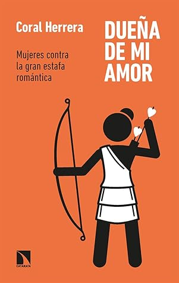

Dueña de mi amor: Mujeres contra la gran estafa romántica
Reseña local de ejemplo

Ver reseña en GoodReads (necesita cuenta)
De eso se trata precisamente este agradable libro escrito por la española Coral Herrera, humanista y comunicadora que ya cuenta con varios títulos analizando este fenómeno que nos atañe a todos!.
Nos atañe a todos, pero no por igual, porque para las mujeres el amor es una cosa bien diferente que para los hombres y de eso se ha encargado muy bien el patriarcado y hasta el capitalismo, (que por cierto, siempre van de la mano). La romantización del amor como el ideal a alcanzar en la vida para las mujeres en una realidad diaria y ¡ay de aquella que no lo logre!, será entonces una mujer sola, amargada, merecedora de lástima por parte de sus amigos y familiares.
Pero llegar a conseguir el ideal del amor y sostenerlo sin vivir un infierno es casi una tarea imposible pues los hombres no van por el mismo camino, ellos tienen mucha más libertad sin hablar de la educación que han recibido en la cual se les enseña a no entregarse tanto, a reprimir sus sentimientos y a diferenciar claramente sexo de afecto, cosa que no ocurre con las mujeres.
Entonces las mujeres no la tenemos fácil pues fuimos criadas para amar, complacer, sacrificar, trabajar doble jornada, comprender, cuidar, etc., y en este contrato de amor, hay un gran desequilibrio.
Coral Herrera nos da pautas concretas de manera clara y sincera para salir de esas relaciones donde llevemos las de perder, donde no hay futuro, donde no estamos siendo felices; nos invita a quienes tengan hijas e hijos a hablar con ellos y crearles una consciencia real y no endulcorada del amor en la vida, hablar con ellos que apenas empiezan ese camino a veces tortuoso de las relaciones de pareja.
No es un libro de autoayuda, así haya dicho arriba que da pautas, simplemente la autora nos ayuda a entender, a clarificar la trampa en la que hemos caído al pensar hombres y mujeres, pero especialmente mujeres, que el amor es eterno y es sinónimo de sufrimiento como nos lo cantan en miles, millones de canciones y nos lo cuentan todas las películas, libros y series románticas idealizando una felicidad que es imposible alcanzar cuando el desequilibrio en la forma de ver la vida de ambos protagonistas es tan evidente.
Para no terminar esta reseña con un tinte tan dramático y negativo sobre el amor, la autora nos cuenta cómo se puede negociar ese amor, cómo se puede vivir en pareja con justicia para ambas partes y también con realismo, sin imaginarios del amor de telenovelas.
Invitó a todas y todos, (hombres también) a leer a Coral Herrera; este libro que nos da claridad sobre las relaciones humanas a la luz de la revolución del amor y la revolución social que es el feminismo.